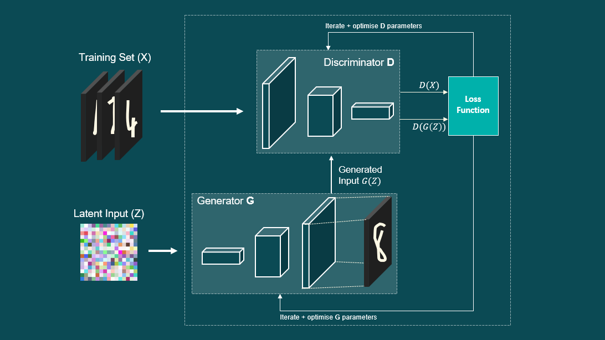

4 - Generative Adversarial Network¶
github.com/samph4
~
Preface¶
This example will be more in-depth than the first few, but a lot of the principles that we have already applied also apply here. As always, we’ll go through it step by step and I’ll do my best to explain each part so that it makes sense and is as easy to follow as I can make it. In this final example, we will be looking at Generative Adversarial Networks - affectionately known as GANs. The concept of GANs were first introduced by Ian Goodfellow and his team in 2014 (https://arxiv.org/abs/1406.2661), where they “proposed a new framework for estimating generative models via an an adversarial process”. I’ll get into this in much more detail, but essentially what is happening here is that we are going to train two neural networks (that will be adversaries), that will compete against one another in order to improve. One will be reffered to as the Discriminator and the other will be known as the Generator. We combine both of these networks to form a combined model known as the GAN for training. Once training has been completed, we want to be able to use the trained Generator network independently to generate new things!
The image above looks rather unassuming, it is simply a row of portraits of four different people. The interesting thing however, is that none of these people actually exist. They are not real. Each of these images has been generated by a Generative Adversarial Network known as StyleGAN. StyleGAN is a sophisticated GAN that has been curated and trained by NVIDIA and represents the state-of-the-art results in data-driven unconditional generative image modelling and is an impressive testament as to the possibilities of Generative Networks. Here is another video that demonstrates the capabilities of these methods (which is only 2 minutes long so I recommend you watch it because it’s v cool) - https://www.youtube.com/watch?v=p5U4NgVGAwg. With that being said, lets take a closer look as to how these things actually work.

~
Training Set¶
First of all, we need to decide what we want our generative network to generate. Of course, NVIDIA’s sophisticated StyleGAN is capable of generating human faces, but GANs are capable of generating new data regardless of the form that it comes in. GANs can be used to generate new audio signals, new images, new time-series data etc. GANs are capable of generating new data that is representative of the data that it was trained on (the training set). Therefore, in large, a key factor in the success of the GAN model lies in the quality of the training set.
In this example we will
dataset = name of variable containing training set
Note
Throughout this example I may use terms such as ‘real’ and ‘fake’ when referring to data. Real refers to data samples that come from the training set and ‘fake’ samples refer to any data that is produced by the Generator.
Import Libraries¶
import numpy as np
from matplotlib import pyplot
from numpy.random import rand
from numpy.random import randn
from keras.models import Sequential
from keras.layers import Dense
from keras.layers import LeakyReLU
from keras import optimizers
from keras import initializers
from matplotlib import pyplot
Using TensorFlow backend.
Create Training (Target) Dataset¶
Here we create a simple dataset that will be used to form the training set of real data. For simplicity, we will consider a simple y=sin(x) function.
np.sqrt(5)
2.23606797749979
n1 = 20
dataset = np.zeros((n1,2))
dataset[:,0] = np.linspace(0,2*np.pi,n1)
dataset[:,1] = np.sin(dataset[:,0])
pyplot.scatter(dataset[:,0],dataset[:,1], marker='x',color='r')
pyplot.show()
Take Real Samples¶
To evaluate the performance of the GAN we will use the real data from the training set to train the Discriminator so that it can learn the characteristics of data that comes from the training set. This will make it easier for the Discriminator to label samples that come from the Generator as fake.
def take_real_samples(n):
np.random.seed(30)
idx = np.random.randint(len(dataset), size=int(n))
X = dataset[idx,:]
y = np.ones((n,1))
return X, y
Generate points in latent space as input for the generator¶
Next, we can use the generator model to generate fake samples. Although first we need to generate points in latent space via the generate_latent_points() function below. These can then be passed to the generator model and used to generate new samples.
# generate points in latent space as input for the generator
def create_latent_points(latent_dim, n):
# generate points in the latent space
x_input = randn(latent_dim * n)
# reshape into a batch of inputs for the network
x_input = x_input.reshape(n, latent_dim)
return x_input
Use the Generator to generate n fake examples, with class labels¶
The generate_fake_samples() function below inputs the latent variables created by the generate_latent_points() function into the generator network to generate n fake samples X. Class labels of 0’s are assigned to variable y to label the fake samples.
# use the generator to generate n fake examples, with class labels
def generate_fake_samples(generator, latent_dim, n):
# generate points in latent space
x_input = create_latent_points(latent_dim, n)
# predict outputs
X = generator.predict(x_input)
# create class labels
y = np.zeros((n, 1))
return X, y
Define GAN Model¶
Discrimnator¶
def define_discriminator(n_inputs=2):
model = Sequential()
model.add(Dense(25, kernel_initializer='he_uniform', input_dim=n_inputs))
model.add(LeakyReLU(alpha=0.01))
model.add(Dense(15, kernel_initializer='he_uniform'))
model.add(LeakyReLU(alpha=0.01))
model.add(Dense(10, kernel_initializer='he_uniform'))
model.add(LeakyReLU(alpha=0.01))
model.add(Dense(5, kernel_initializer='he_uniform'))
model.add(LeakyReLU(alpha=0.01))
model.add(Dense(1, activation='sigmoid'))
# compile model
model.compile(loss='binary_crossentropy', optimizer='adam', metrics=['accuracy'])
return model
Generator¶
# define the standalone generator model
def define_generator(latent_dim, n_outputs=2):
model = Sequential()
model.add(Dense(15, activation='relu', kernel_initializer='he_uniform', input_dim=latent_dim))
model.add(Dense(n_outputs, activation='linear'))
return model
Combined GAN Model¶
# define the combined generator and discriminator model, for updating the generator
def define_gan(generator, discriminator):
# make weights in the discriminator not trainable
discriminator.trainable = False
# connect them
model = Sequential()
# add generator
model.add(generator)
# add the discriminator
model.add(discriminator)
# compile model
model.compile(loss='binary_crossentropy', optimizer='adam',metrics=['accuracy'])
return model
Evaluate Performance¶
# evaluate the discriminator and plot real and fake points
def summarize_performance(epoch, generator, discriminator, latent_dim, n=100):
# prepare real samples
x_real, y_real = take_real_samples(n)
# evaluate discriminator on real examples
_, acc_real = discriminator.evaluate(x_real, y_real, verbose=0)
# prepare fake examples
x_fake, y_fake = generate_fake_samples(generator, latent_dim, n)
# evaluate discriminator on fake examples
_, acc_fake = discriminator.evaluate(x_fake, y_fake, verbose=0)
# summarize discriminator performance
print(epoch+1, acc_real, acc_fake)
# scatter plot real and fake data points
pyplot.scatter(x_real[:, 0], x_real[:, 1], marker='x', color='red')
pyplot.scatter(x_fake[:, 0], x_fake[:, 1], marker='$\u25EF$', color='grey')
pyplot.show()
# train the generator and discriminator
def train(g_model, d_model, gan_model, latent_dim, n_epochs=20000, n_batch=1024, n_eval=1000):
# determine half the size of one batch, for updating the discriminator
half_batch = int(n_batch / 2)
# manually enumerate epochs
for i in range(n_epochs):
# prepare real samples
x_real, y_real = take_real_samples(half_batch)
# prepare fake examples
x_fake, y_fake = generate_fake_samples(g_model, latent_dim, half_batch)
# update discriminator
d_model.train_on_batch(x_real, y_real)
d_model.train_on_batch(x_fake, y_fake)
# prepare points in latent space as input for the generator
x_gan = create_latent_points(latent_dim, n_batch)
# create inverted labels for the fake samples
y_gan = np.ones((n_batch, 1))
# update the generator via the discriminator's error
gan_model.train_on_batch(x_gan, y_gan)
# evaluate the model every n_eval epochs
if (i+1) % n_eval == 0:
summarize_performance(i, g_model, d_model, latent_dim)
# size of the latent space
latent_dim = 5
# create the discriminator
discriminator = define_discriminator()
# create the generator
generator = define_generator(latent_dim)
# create the gan
gan_model = define_gan(generator, discriminator)
# train model
train(generator, discriminator, gan_model, latent_dim)
---------------------------------------------------------------------------
InternalError Traceback (most recent call last)
<ipython-input-12-3db7c9b9c7df> in <module>
8 gan_model = define_gan(generator, discriminator)
9 # train model
---> 10 train(generator, discriminator, gan_model, latent_dim)
<ipython-input-11-21e0732ec1cf> in train(g_model, d_model, gan_model, latent_dim, n_epochs, n_batch, n_eval)
8 x_real, y_real = take_real_samples(half_batch)
9 # prepare fake examples
---> 10 x_fake, y_fake = generate_fake_samples(g_model, latent_dim, half_batch)
11 # update discriminator
12 d_model.train_on_batch(x_real, y_real)
<ipython-input-6-09e284b18cef> in generate_fake_samples(generator, latent_dim, n)
4 x_input = create_latent_points(latent_dim, n)
5 # predict outputs
----> 6 X = generator.predict(x_input)
7 # create class labels
8 y = np.zeros((n, 1))
~\miniconda3\envs\tensorflow\lib\site-packages\keras\engine\training.py in predict(self, x, batch_size, verbose, steps, callbacks, max_queue_size, workers, use_multiprocessing)
1460 verbose=verbose,
1461 steps=steps,
-> 1462 callbacks=callbacks)
1463
1464 def train_on_batch(self, x, y,
~\miniconda3\envs\tensorflow\lib\site-packages\keras\engine\training_arrays.py in predict_loop(model, f, ins, batch_size, verbose, steps, callbacks)
322 batch_logs = {'batch': batch_index, 'size': len(batch_ids)}
323 callbacks._call_batch_hook('predict', 'begin', batch_index, batch_logs)
--> 324 batch_outs = f(ins_batch)
325 batch_outs = to_list(batch_outs)
326 if batch_index == 0:
~\miniconda3\envs\tensorflow\lib\site-packages\tensorflow_core\python\keras\backend.py in __call__(self, inputs)
3725 value = math_ops.cast(value, tensor.dtype)
3726 converted_inputs.append(value)
-> 3727 outputs = self._graph_fn(*converted_inputs)
3728
3729 # EagerTensor.numpy() will often make a copy to ensure memory safety.
~\miniconda3\envs\tensorflow\lib\site-packages\tensorflow_core\python\eager\function.py in __call__(self, *args, **kwargs)
1549 TypeError: For invalid positional/keyword argument combinations.
1550 """
-> 1551 return self._call_impl(args, kwargs)
1552
1553 def _call_impl(self, args, kwargs, cancellation_manager=None):
~\miniconda3\envs\tensorflow\lib\site-packages\tensorflow_core\python\eager\function.py in _call_impl(self, args, kwargs, cancellation_manager)
1589 raise TypeError("Keyword arguments {} unknown. Expected {}.".format(
1590 list(kwargs.keys()), list(self._arg_keywords)))
-> 1591 return self._call_flat(args, self.captured_inputs, cancellation_manager)
1592
1593 def _filtered_call(self, args, kwargs):
~\miniconda3\envs\tensorflow\lib\site-packages\tensorflow_core\python\eager\function.py in _call_flat(self, args, captured_inputs, cancellation_manager)
1690 # No tape is watching; skip to running the function.
1691 return self._build_call_outputs(self._inference_function.call(
-> 1692 ctx, args, cancellation_manager=cancellation_manager))
1693 forward_backward = self._select_forward_and_backward_functions(
1694 args,
~\miniconda3\envs\tensorflow\lib\site-packages\tensorflow_core\python\eager\function.py in call(self, ctx, args, cancellation_manager)
543 inputs=args,
544 attrs=("executor_type", executor_type, "config_proto", config),
--> 545 ctx=ctx)
546 else:
547 outputs = execute.execute_with_cancellation(
~\miniconda3\envs\tensorflow\lib\site-packages\tensorflow_core\python\eager\execute.py in quick_execute(op_name, num_outputs, inputs, attrs, ctx, name)
65 else:
66 message = e.message
---> 67 six.raise_from(core._status_to_exception(e.code, message), None)
68 except TypeError as e:
69 keras_symbolic_tensors = [
~\miniconda3\envs\tensorflow\lib\site-packages\six.py in raise_from(value, from_value)
InternalError: Blas GEMM launch failed : a.shape=(32, 5), b.shape=(5, 15), m=32, n=15, k=5
[[node dense_6/MatMul (defined at C:\Users\Samuel\miniconda3\envs\tensorflow\lib\site-packages\keras\backend\tensorflow_backend.py:3009) ]] [Op:__inference_keras_scratch_graph_377]
Function call stack:
keras_scratch_graph